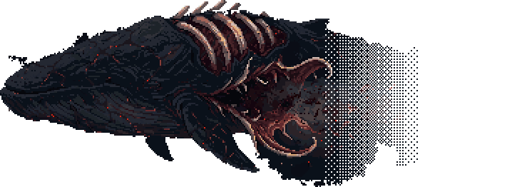
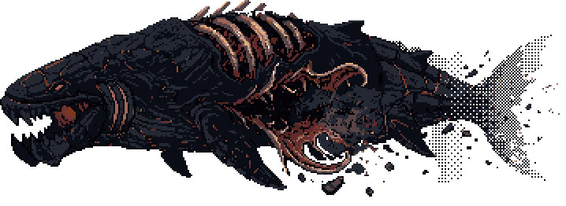
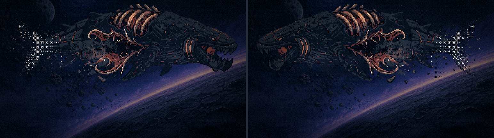
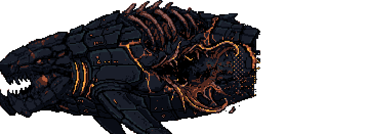
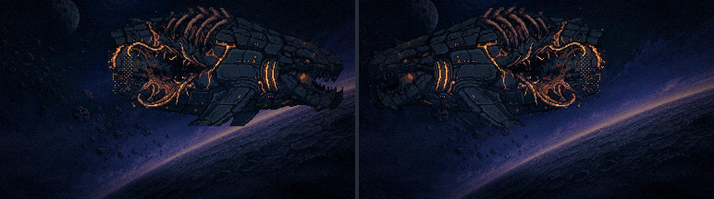
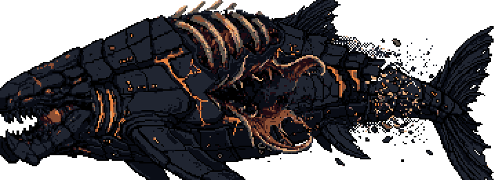
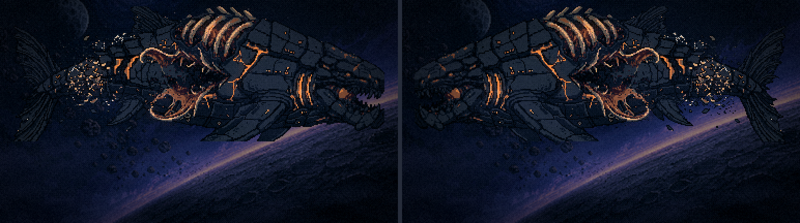
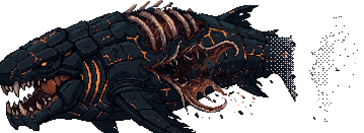
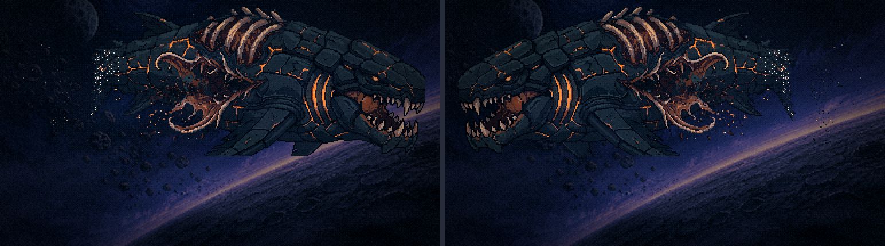

Leviatã final · no ângulo e no estado do que já tínhamos
Bloco D, passo 2, 2ª rodada · 18/10/2026 · a sua correção: a troca só vale se chegar igual ao que já estava pronto. ← a 1ª rodada (de perfil, descartada)
O que eu errei. Gerei o bicho de perfil chapado e abri uma ferida oval no flanco. A arte de hoje é outra coisa:
- ela é três-quartos, vista de cima e de frente: a cabeça à esquerda vem para a câmera, e o corpo foge em profundidade para a direita até se desfazer em destroços (o rabo nem aparece);
- o que eu lia como "boca" é o rombo no meio da carcaça: a carne aberta com abas de osso em lâmina, de onde vazam fluido e detritos;
- as costelas ficam expostas no dorso, vistas de cima;
- a pele inteira está rachada em teia de lava, e as cores são apagadas. É isso que faz ele ler como abatido.
O que mudou no método. A arte de hoje deixou de ser só comparação: ela é o ponto de partida. Ela dá o ângulo, o rombo, as costelas e o estado; a base aprovada dá só o desenho (placas, cabeça de mandíbula, guelras, barbatanas de tubarão). Testei dois caminhos:
- edição: a arte de hoje editada com a base como referência (
/edit-images-v2); - geração: a arte de hoje como referência de composição e de dano, a base como referência de desenho.
Todas passaram pela paleta da arte de hoje mais a da base.
Na cena (capítulo 4 pausado, corpo trocado): o painel da direita é a orientação certa, com a cabeça à esquerda como hoje. O da esquerda está espelhado.
Hoje

f8-leviata de hoje.
Geração 62 a mais próxima


Edição 62


Edição 61


Geração 61


O que ainda falta no escolhido
- pontilhado A nuvem pontilhada da traseira veio branca (o gerador ignora o limite de cor), e a paleta a puxou para o osso. Na de hoje ela é escura. Reponho a nuvem escura.
- teia de lava As novas têm menos rachaduras que a de hoje. Se faltar "abatido", a teia se reforça por inpaint, sem mexer no resto.
- depois A lava separada em camada,
FERIDA_X/Yremedido no rombo novo, e o mesmo método nas outras cenas: a reentrada, a carcaça na lua, o menu e a silhueta, cada uma partindo da sua arte de hoje.
Ferramenta: scripts/_leviata/_final-angulo.mjs (edit | gera). A variante só com texto foi recusada pelo filtro do PixelLab.